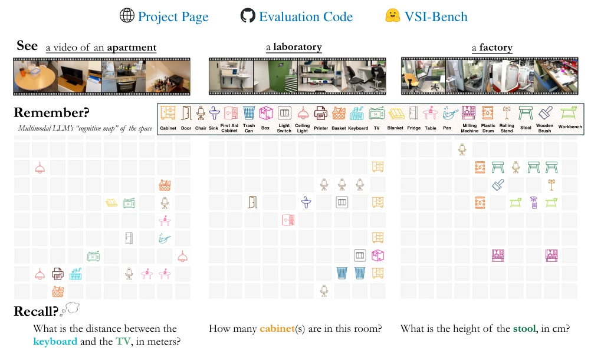
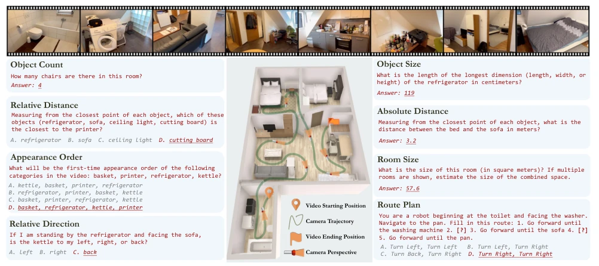
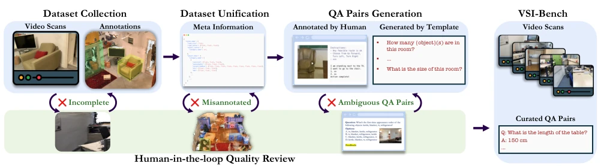
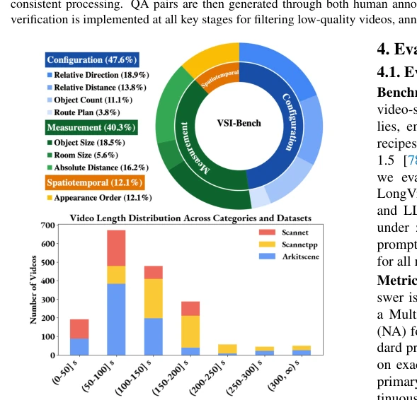
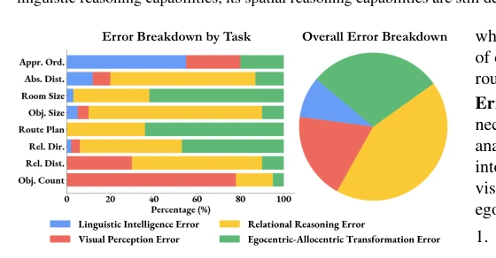
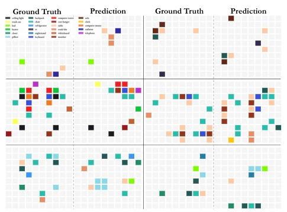
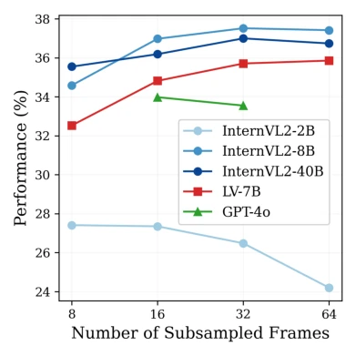
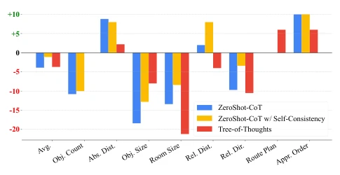

This paper conducts a rigorous health check on the "spatial intelligence" of MLLMs, revealing they are essentially "2D myopic". Although capable of understanding video content, they fail when queried about distance and orientation, with 70% of errors stemming from spatial reasoning. Most ironically, the highly touted Chain-of-Thought (CoT) not only proves ineffective here but further perplexes the model, even causing performance regression. However, explicitly generating "cognitive maps" does indeed improve distance judgment. This work pours cold water on embodied intelligence: relying solely on language reasoning is insufficient; one must truly understand spatial topology. Existing benchmarks mostly focus on content understanding, ignoring 3D spatial relations. This paper fills the gap with VSI-Bench, revealing the spatial cognitive limitations of MLLMs in real-world scenarios.
Existing MLLM benchmarks mostly focus on video content understanding [24] or static images, lacking assessment of 3D spatial relations. Embodied intelligence requires navigation [8] and manipulation [7], which demands the model possess visual spatial intelligence. Humans can easily construct mental maps, but MLLMs are trained solely on 2D data, lacking implicit world models. This paper aims to fill this gap, quantitatively evaluating MLLMs' spatial perception, memory, and reasoning capabilities in real indoor scenes, revealing their bottlenecks. Especially for robot applications, spatial understanding is the foundation of interaction; current models perform weakly on key capabilities such as egocentric-allocentric conversion.

Figure 1. Whether at home, in the workplace, or elsewhere, the ability to perceive a space, remember its layout, and retrieve this spatial information to answer questions on demand is a key aspect of visual-spatial intelligence. Recent Multimodal LLMs can understand general videos, but can they “think spatially” when presented with a video recording of an environment? Can they build an accurate, implicit “cognitive map” that allows them to answer questions about a space? What are the strengths and limitations of using MLLMs to enhance spatial intelligence? We dig into these questions by setting up video data for MLLMs to watch, building a VQA benchmark to check their recall, and examining what the MLLMs actually remember and understand.

Figure 3. Tasks demonstration of VSI-Bench. Note: the questions above are simplified slightly for clarity and brevity.
The core of the method is constructing the VSI-Bench benchmark, integrating 288 real indoor videos from datasets such as ScanNet [19], ScanNet++, and ARKitScenes, generating 5000+ high-quality QA pairs. The construction process includes data unification, template-generated QA, and a human review loop. Evaluation covers three types of tasks: configuration (counting, path), measurement (distance, size), and spatio-temporal (appearance order). To explore internal model mechanisms, self-explanation (language) and cognitive map (visual) probing are introduced. The cognitive map task requires the model to predict the center position of objects in a 10x10 grid, thereby assessing the consistency between local and global spatial models. Additionally, the MRA metric is introduced for numerical prediction to address the issue that traditional exact matching cannot measure the degree of error.

Figure 4. Benchmark curation pipeline. The pipeline first unifies diverse datasets into a standardized format and semantic space for consistent processing. QA pairs are then generated through both human annotation and question templates. To ensure quality, human verification is implemented at all key stages for filtering low-quality videos, annotations, and ambiguous QA pairs.

Figure 5. Benchmark Statistics. Top: The distribution of tasks across three main categories. Bottom: The video length statistic.
Evaluated 15 video MLLMs; human accuracy 79%, best model 33% lower. Found spatial reasoning is the main bottleneck, accounting for over 70% of errors. CoT and Tree-of-Thoughts average performance declined, proving pure language reasoning is invalid. Generating cognitive maps improved relative distance accuracy by 10%, GT maps by 20%. Map accuracy drops sharply with increasing distance, indicating the model only has local models. The metric introduces MRA to handle numerical prediction. Open-source models' performance varies, most fall below the random baseline.

Figure 7. Human-conducted analysis of errors by type. Over 70% of errors stem from faulty spatial reasoning capabilities.

Figure 9. Visualization of cognitive maps from MLLM and GT.

Figure 11. Analysis of different # sampled frames.Figure 14. VSI-Bench Examples (Part 2).
其他图片Other Figures

Figure 8. Relative improvements of CoT, self-consistency and Tree-of-Thought compared to the baseline. All three prevailing prompting techniques fail on average on our benchmark, and, in some cases, task performance becomes much worse after applying them. This implies that VSI-Bench cannot be solved by solely improving linguistic capabilities.